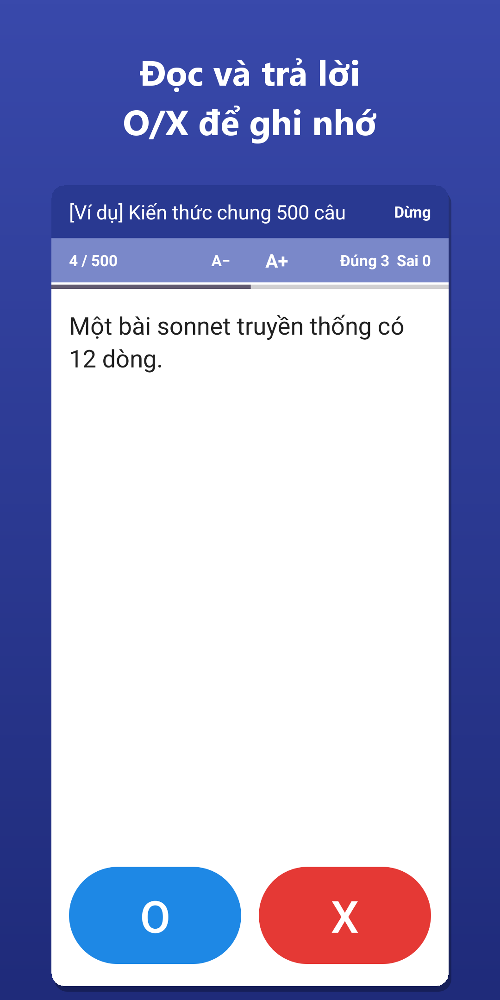
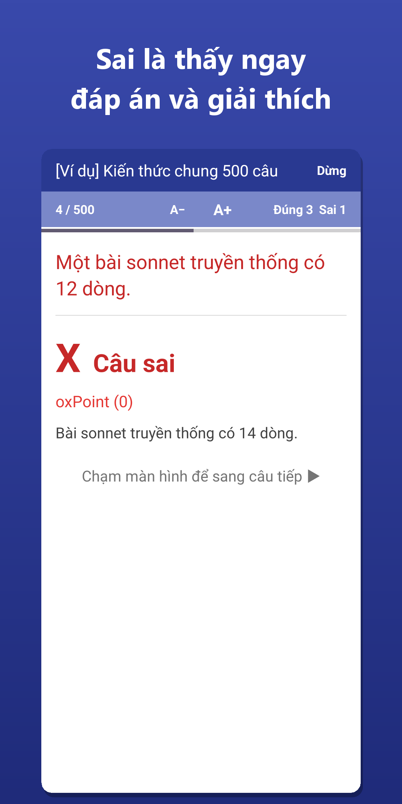
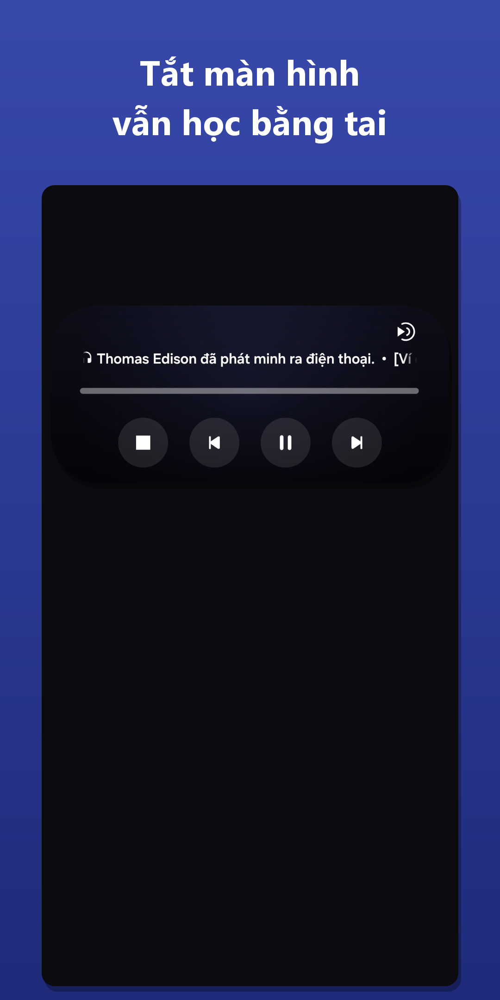
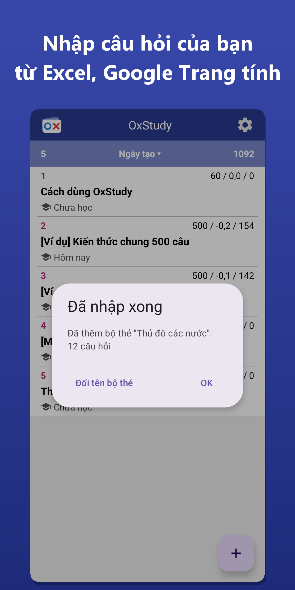

Bài giảng y khoa, câu hỏi thi, nghĩa của từ, kiến thức chung — bất cứ nội dung nào có thể kiểm tra bằng đúng/sai đều có thể thành một bộ thẻ trong OxStudy.
Phù hợp để
- Học tiếng Hàn và luyện thi EPS-TOPIK, TOPIK
- Ôn thi tốt nghiệp THPT (phần câu hỏi Đúng/Sai, thử 20 câu Lịch sử)
- Học các môn y khoa cơ sở: sinh lý học, giải phẫu bệnh, dược lý học
- Ôn thi chứng chỉ, học từ vựng và thuật ngữ
- Nghe ôn bài khi đi đường
5 chế độ
Chế độ Kiểm tra
Bấm O hoặc X trong thời gian giới hạn (5–40 giây). Khi sai, đáp án và giải thích hiện ra; khi xong, bạn có thể làm lại chỉ những câu sai.
Chế độ Danh sách
Xem câu hỏi cùng đáp án và giải thích như đọc sách. Kéo nút bên phải để đến ngay vị trí mong muốn.
Chế độ Thẻ
Thẻ ghi nhớ tự chuyển sang thẻ tiếp theo theo độ dài nội dung, không cần chạm.
Chế độ Âm thanh
Đọc to câu hỏi, đáp án và giải thích (1x–2x). Vẫn đọc khi tắt màn hình, có hẹn giờ tắt.
Chế độ Chỉnh sửa
Thêm câu, sửa lỗi chính tả, tìm kiếm.
Ôn câu yếu trước: oxPoint
Mỗi câu có một oxPoint: +1 khi trả lời đúng trong bài kiểm tra, −1 khi sai hoặc hết giờ. Bạn có thể chỉ chọn những câu chưa thuộc, ví dụ "−2 trở xuống", hoặc chỉ những câu chưa làm.
Tạo bộ thẻ bằng Excel hoặc Google Trang tính
Điền cột A là câu hỏi, cột B là đáp án (O/X), cột C là giải thích, rồi nhập trực tiếp tệp Excel (.xlsx) hoặc Google Trang tính. Bạn có thể xuất mẫu trống từ ứng dụng.
| A: Câu hỏi | B: Đáp án | C: Giải thích |
|---|---|---|
| Nước sôi ở 100 °C ở áp suất 1 atm. | O | Tính ở mực nước biển (1 atm). |
| Mặt Trời là một hành tinh. | X | Mặt Trời là một ngôi sao. |
Bộ thẻ ví dụ có sẵn
- EPS-TOPIK tiếng Hàn 100 câu Đúng/Sai (câu hỏi tiếng Hàn, giải thích tiếng Việt)
- Lịch sử THPT – ôn thi tốt nghiệp THPT dạng Đúng/Sai (dùng thử)
- Y khoa: Sinh lý học, Giải phẫu bệnh, Dược lý học – mỗi bộ 100 câu, có giải thích
- Kiến thức chung 300 câu, Khoa học phổ thông 300 câu
Bộ thẻ ví dụ chỉ để luyện tập, không đảm bảo độ chính xác của nội dung.
Ngoài ra
- Chia sẻ bộ thẻ bằng tệp .oxstudy, sao lưu tất cả bộ thẻ cùng lịch sử học
- Cỡ chữ từ 90% đến 400%
- Ngôn ngữ: Tiếng Việt, English, 한국어, 日本語, Español, 繁體中文
- Dùng được trên điện thoại và máy tính bảng
- Miễn phí (có quảng cáo). Không có quảng cáo khi bạn đang trả lời câu hỏi hoặc khi chế độ Thẻ, Âm thanh đang phát. Bộ thẻ và lịch sử học chỉ được lưu trong điện thoại của bạn.